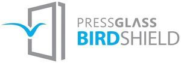

Trade Mark Journal No.2025/021 23 May 2025
WO0000001843100 (19,21,35,37,40)
Office of origin: European Union Intellectual Property Office (EUIPO)
Date of International Registration:29 November 2024
Date of designation in the UK:
29 November 2024

The mark contains the colours blue and gray.
International priority date claimed: 13 June 2024
(European Union Intellectual Property Office (EUIPO))
(019040955)
- Class 19
- Alabaster glass for building; barricades, not of metal; glass blocks for building; buildings, not of metal; buildings, transportable, not of metal; glass bricks; clear glass for building purposes; doors, not of metal; glass doors; structural elements of glass; glass elements for windows; glass elements for building panels; glazing elements made from glass; glass powder for building purposes; smart glass for building; coloured glass for windows; framework, not of metal, for building; laminated building glass incorporating a liquid crystal film; building materials, not of metal; building materials consisting of glass; sheet glazing materials for use in building; modified sheet glass [for building]; greenhouse frames, not of metal; roofing tiles, not of metal; fences made of laminated glass; window glass for building; windows, not of metal; window glass; stained glass windows (glass for -); sun louvres of glass for buildings; coverings, not of metal, for building; cladding panels made of glass; glass panels; common sheet glass for building; tiles of glass; glass panels; double glazing units (non-metallic -); double glazing panels (non-metallic -); pre-fabricated greenhouses, not of metal; latticed netting of glass for building purposes; tiles of glass; glass panels; building materials consisting of glass; glass walls; greenhouses, transportable, not of metal; building glass; safety glass; building glass; insulating glass for building; window glass; layered glass; colored sheet glass [for building]; laminated flat glass [for building]; window glass; partitions, not of metal.
- Class 21
- Sheets of glass, other than for building; colored sheet glass [not for building]; semi-worked glass [except glass used in building]; glass, unworked or semi-worked, except building glass; glass panels [semi-finished article]; sheets of glass, other than for building; semi-finished safety glass; coloured glass (semi-worked -); porous glass; stamped glass; alabaster glass, not for building; anti-reflecting glass; coloured glass (semi-worked -); semi-worked glass; enamelled glass; security glass for making into vehicle windows; laminated glass [other than for building]; polished plate glass; opaline glass; glass for vehicle windows [semi-finished product]; unworked glass; unworked glass; heat reflecting glass [semi-worked]; works of art made of glass; float glass [semi-worked]; plate glass [raw material]; smoothed plate glass; wired plate glass, not for building; semi-worked glass; pressed glass; powdered glass for decoration; figured plate glass, not for building; glass incorporating fine electrical conductors; glass sheets; glass wool, other than for insulation; fibreglass, other than for insulation or textile use; glassware.
- Class 35
- Distribution of advertising, marketing and promotional material; collection of data; administrative processing of purchase orders; provision of commercial information; computerized file management; compilation of directories for publication on the internet; organisation of exhibitions and trade fairs for business and promotional purposes; demonstration of goods; mediation of trade business for third parties; presentation of goods on communication media, for retail purposes; sales promotion for others; advertising; online advertising on a computer network; administrative processing of purchase orders; wholesale services in relation to alabaster glass for building, non-metallic barriers, glass blocks for building, buildings (non-metallic), transportable buildings, not of metal, glass bricks, clear glass for building purposes, mouldings, not of metal, doors of glass, structural elements of glass, glass elements for windows, glass elements for building panels, glazing elements made from glass; wholesale services in relation to glass powder for building purposes, smart glass for building, coloured glass for windows, frameworks, not of metal, for building, laminated building glass incorporating a liquid crystal film, building materials (non-metallic), building materials of glass, sheet glazing materials for use in building, modified sheet glass [for building], horticultural frames, not of metal, roof coverings, not of metal; wholesale services in relation to fences made of laminated glass, window glass, for building, windows, not of metal, windows of glass, glass for stained-glass windows, sun louvres of glass for buildings, cladding, not of metal, for building, cladding panels made of glass, glass panels, sheets of glass for building, tiles of glass, glass pans, double glazing units (non-metallic -), double-glazed panels not of metal, prefabricated greenhouses, not of metal, fibreglass mesh for building; wholesale services in relation to glass roofs, glass screens, glass (building materials), glass walls, greenhouses, transportable, not of metal, glazing for the construction industry, not of metal, safety glass, building glass, insulating glass, windows, laminated glass, coloured sheet glass (for building), laminated flat glass [for building], window panels, partitions, not of metal, glass sheets, other than for building, colored sheet glass [not for building]; wholesale services in relation to semi-worked glass [except glass used in building], glass, unworked or semiworked, except building glass, glass panels [semi-finished article], glass slabs, other than for building, semi-finished safety glass, semi-worked coloured glass, porous glass, stamped glass, alabaster glass, not for building, anti-reflecting glass, semi-worked coloured glass, semi-worked glass; wholesale services in relation to enamelled glass, security glass for making into vehicle windows, laminated glass [other than for building], polished plate glass, opaline glass, glass for vehicle windows [semi-finished product], unworked glass, glass, not worked, heat reflecting glass [semi-worked], works of art made of glass, float glass [semiworked], plate glass [raw material], smoothed plate glass, wired plate glass, not for building; wholesale services in relation to semi-worked glass, pressed glass, powdered glass for decoration, figured plate glass, not for building, glass incorporating fine electrical conductors, glass sheets, glass wool, other than for insulation, fibreglass, other than for insulation or textile use, glassware; retail services in relation to alabaster glass for building, non-metallic barriers, glass blocks for building, buildings (non-metallic), transportable buildings, not of metal, glass bricks, clear glass for building purposes, mouldings, not of metal, doors of glass, structural elements of glass, glass elements for windows, glass elements for building panels, glazing elements made from glass, glass powder for building purposes, smart glass for building; retail services in relation to coloured glass for windows, frameworks, not of metal, for building, laminated building glass incorporating a liquid crystal film, building materials (non-metallic), building materials of glass, sheet glazing materials for use in building, modified sheet glass [for building], horticultural frames, not of metal, roof coverings, not of metal, fences made of laminated glass, window glass, for building; retail services in relation to windows, not of metal, windows of glass, glass for stained-glass windows, sun louvres of glass for buildings, cladding, not of metal, for building, cladding panels made of glass, glass panels, sheets of glass for building, tiles of glass, glass pans, double glazing units (non-metallic -), double-glazed panels not of metal, prefabricated greenhouses, not of metal, fibreglass mesh for building, glass roofs, glass screens, glass (building materials); retail services in relation to glass walls, greenhouses, transportable, not of metal, glazing for the construction industry, not of metal, safety glass, building glass, insulating glass, windows, laminated glass, coloured sheet glass (for building), laminated flat glass [for building], window panels, partitions, not of metal, glass sheets, other than for building, colored sheet glass [not for building]; retail services in relation to semiworked glass (except building glass), unworked or semi-worked glass (except glass used in building), glass panels [semi-finished article], sheet glass, other than for building, semi-finished safety glass, coloured glass (semi-worked -), porous glass, stamped glass, alabaster glass, not for building, anti-reflecting glass, coloured glass (semi-worked -), semi-worked glass; retail services in relation to enamelled glass, security glass for making into vehicle windows, laminated glass [other than for building], glass for mirrors, opal glass, window glass for vehicles, unworked glass, unprocessed glass, heat reflecting glass [semi-worked], ornamental glass, float glass [semi-worked], plate glass [raw material], smoothed plate glass, reinforced glass, not for building, semi-worked glass, pressed glass, powdered glass for decoration, figured plate glass, not for building; retail services in relation to glass incorporating fine electrical conductors, trunks, glass wool other than for insulation, fibreglass, other than for insulation or textile use, glassware; online retail services in relation to alabaster glass for building, barricades, not of metal, glass blocks for building, buildings, not of metal, buildings, transportable, not of metal, glass bricks, clear glass for building purposes, doors, not of metal, glass doors, structural elements of glass, glass elements for windows, glass elements for building panels, glazing elements made from glass, glass powder for building purposes; online retail services in relation to smart glass for building, coloured glass for windows, framework, not of metal, for building, laminated building glass incorporating a liquid crystal film, building materials, not of metal, building materials consisting of glass, sheet glazing materials for use in building, modified sheet glass [for building], greenhouse frames, not of metal, roofing tiles, not of metal; online retail services in relation to fences made of laminated glass, window glass, for building, windows, not of metal, windows of glass, glass for stained-glass windows, sun louvres of glass for buildings, cladding, not of metal, for building, cladding panels made of glass, glass panels, sheets of glass for building, tiles of glass, glass pans, double glazing units (non-metallic -), double-glazed panels, not of metal, prefabricated greenhouses, not of metal, fibreglass mesh for building; online retail services in relation to glass roofs, glass screens, glass (building materials), glass walls, greenhouses, transportable, not of metal, glazing for the construction industry, not of metal, safety glass, building glass, insulating glass, windows, laminated glass, coloured sheet glass (for building), laminated flat glass [for building], window panels, partitions, not of metal, glass sheets, other than for building, colored sheet glass [not for building]; online retail services in relation to semiworked glass (except building glass), unworked or semi-worked glass (except glass used in building), glass panels [semi-finished article], sheet glass, other than for building, semi-finished safety glass, coloured glass (semi-worked -), porous glass, stamped glass, alabaster glass, not for building, anti-reflecting glass, coloured glass (semi-worked -), semi-worked glass; online retail services in relation to enamelled glass, security glass for making into vehicle windows, laminated glass [other than for building], glass for mirrors, opal glass, window glass for vehicles, unworked glass, unprocessed glass, heat reflecting glass [semi-worked], ornamental glass, float glass [semi-worked], plate glass [raw material], smoothed plate glass, reinforced glass, not for building; online retail services in relation to semi-worked glass, pressed glass, powdered glass for decoration, figured plate glass, not for building, glass incorporating fine electrical conductors, trunks, glass wool other than for insulation, fibreglass, other than for insulation or textile use, glassware; mail order retail services in relation to alabaster glass for building, barricades, not of metal, glass blocks for building, buildings, not of metal, buildings, transportable, not of metal, glass bricks, clear glass for building purposes, doors, not of metal, glass doors, structural elements of glass, glass elements for windows, glass elements for building panels, glazing elements made from glass, glass powder for building purposes; mail order retail services in relation to smart glass for building, coloured glass for windows, framework, not of metal, for building, laminated building glass incorporating a liquid crystal film, building materials, not of metal, building materials consisting of glass, sheet glazing materials for use in building, modified sheet glass [for building], greenhouse frames, not of metal, roofing tiles, not of metal; mail order retail services in relation to fences made of laminated glass, window glass, for building, windows, not of metal, windows of glass, glass for stained-glass windows, sun louvres of glass for buildings, cladding, not of metal, for building, cladding panels made of glass, glass panels, sheets of glass for building, tiles of glass, glass pans, double glazing units (non-metallic -), double-glazed panels, not of metal, prefabricated greenhouses, not of metal, fibreglass mesh for building; mail order retail services in relation to glass roofs, glass screens, glass (building materials), glass walls, greenhouses, transportable, not of metal, glazing for the construction industry, not of metal, safety glass, building glass, insulating glass, windows, laminated glass, coloured sheet glass (for building), laminated flat glass [for building], window panels, partitions, not of metal, glass sheets, other than for building, colored sheet glass [not for building]; mail order retail services in relation to semi-worked glass (except building glass), unworked or semi-worked glass (except glass used in building), glass panels [semi-finished article], sheet glass, other than for building, semi-finished safety glass, coloured glass (semi-worked ), porous glass, stamped glass, alabaster glass, not for building, anti-reflecting glass, coloured glass (semi-worked -), semi-worked glass; mail order retail services in relation to enamelled glass, security glass for making into vehicle windows, laminated glass [other than for building], glass for mirrors, opal glass, window glass for vehicles, unworked glass, unprocessed glass, heat reflecting glass [semi-worked], ornamental glass, float glass [semi-worked], plate glass [raw material], smoothed plate glass, reinforced glass, not for building; mail order retail services in relation to semi-worked glass, pressed glass, powdered glass for decoration, figured plate glass, not for building, glass incorporating fine electrical conductors, trunks, glass wool other than for insulation, fibreglass, other than for insulation or textile use, glassware.
- Class 37
- Installation of insulating glass in conservatories, windows, doors and greenhouses; installation of glass in conservatories, windows, doors and greenhouses; double glazing installation; installation of secondary glazing; plate glass installation and repair services; renovation of glazing; glazier services; glazier services; installation of glass and glazing units.
- Class 40
- Window tinting treatment, being surface coating; colouring glass sheets by surface treatment; cutting of sheet glass; glass-blowing; bevelling of glass; glass tempering; laminating of glass sheets; treatment of glass to alter the optical properties; refinishing of fibreglass; glass polishing; grinding; abrasion; etching of glass; glass tinting; glass resurfacing.
PRESS GLASS HOLDING S.A.
Representative: Anna Korbela, ul. Kilińskiego 30 lok.2, PL-42-202 Częstochowa, POLAND